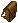
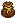

： Leather Container Engraving Tool（裁縫）
： Leather Container Engraving Tool（裁縫） ： Food Decoration Tool（料理）
： Food Decoration Tool（料理） ： Weapon Engraving Tool（アカウント維持8年以上の報酬品）
： Weapon Engraving Tool（アカウント維持8年以上の報酬品） ： Statuette engraving tool（NPC細工屋にて販売） ： Leather Container Engraving Tool（裁縫） ： Food Decoration Tool（料理） ： Weapon Engraving Tool（アカウント維持8年以上の報酬品） ： Statuette engraving tool（NPC細工屋にて販売）
： Statuette engraving tool（NPC細工屋にて販売） ： Leather Container Engraving Tool（裁縫） ： Food Decoration Tool（料理） ： Weapon Engraving Tool（アカウント維持8年以上の報酬品） ： Statuette engraving tool（NPC細工屋にて販売）| ツールの名前 | 必要スキル | 必要な材料 |
Leather Container Engraving Tool |
裁縫75.0 |
 Bone×1 Bone×1
 Leather×6 Leather×6
 Spool of Thread×2 Spool of Thread×2
 Dyes×1 Dyes×1
|
Metal Container Engraving Tool |
細工75.0 |
 Ingot×4 Ingot×4
Springs×1  Gears×2 Gears×2
 Diamond×1 Diamond×1
|
Wooden Container Engraving Tool |
大工75.0 |
 Board×4
Ingot×2 Board×4
Ingot×2
|
Spellbook Engraving Tool |
書写75.0 |
 Feather×1 Feather×1
 Blackpearl×7 Blackpearl×7
|
Food Decoration Tool |
料理75.0 |
Dough×1
 Honey×1 Honey×1
|

| ツールの名前 | 対象アイテム |
Leather Container Engraving Tool |
 Backpack
 Bag  Poach Poach
|
Metal Container Engraving Tool |
Metalchest |
Wooden Container Engraving Tool |
Wooden boxなどの大工スキル”収納”カテゴリのアイテム。作成品がDeedとなるものは対象外です。
ポーション樽にも刻印可能です。 |
Spellbook Engraving Tool |
 Spellbook Spellbook
 Necromancer spellbook Necromancer spellbook
 Book of Chivalry Book of Chivalry
Book of Bushido  Book of Ninjitsu Book of Ninjitsu
Spellweaving spellbook Mysticism spellbook |
Food Decoration Tool |
 Pan of Cookies Pan of Cookies
Cake Pizza類 ただし、高品質品のみ対象となります。 |
Weapon Engraving Tool |
すべての武器 |
Statuette engraving tool |
 tower sculpture tower sculpture
statue (south)  statue (north) statue (north)
statue (east)  pegasus statuette pegasus statuette
Tokuno steal Artifact：tower lantern, sculptureなど石で作られているようなもの |
Armor Engraving Tool |
鍛冶、裁縫、大工で修理できる防具。
布帽子、皮鎧、金属鎧、木製鎧が該当します。 |
刻印ツールのリチャージをするためには特殊宝石の"Blue diamond"  が必要となります。
Blue diamondは宝珠の守人以降、採掘スキルが100以上あるキャラクターが採掘時、まれに入手できる特殊宝石の一種です。
が必要となります。
Blue diamondは宝珠の守人以降、採掘スキルが100以上あるキャラクターが採掘時、まれに入手できる特殊宝石の一種です。